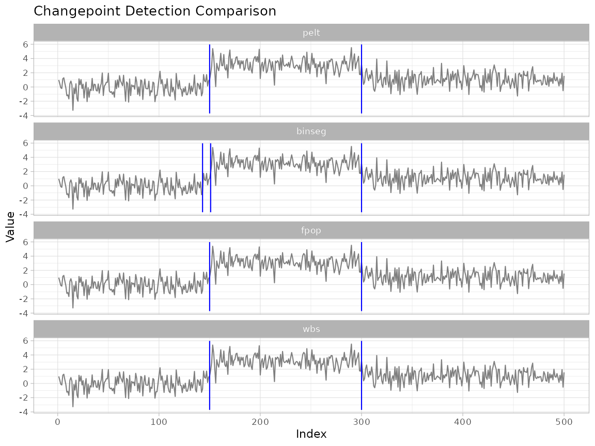
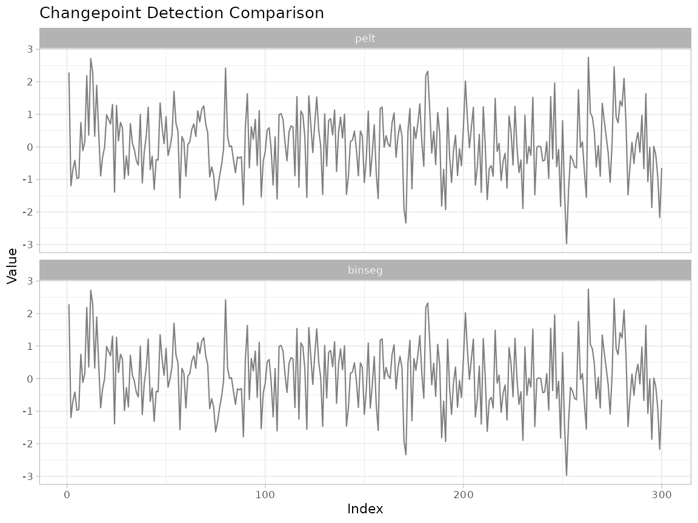
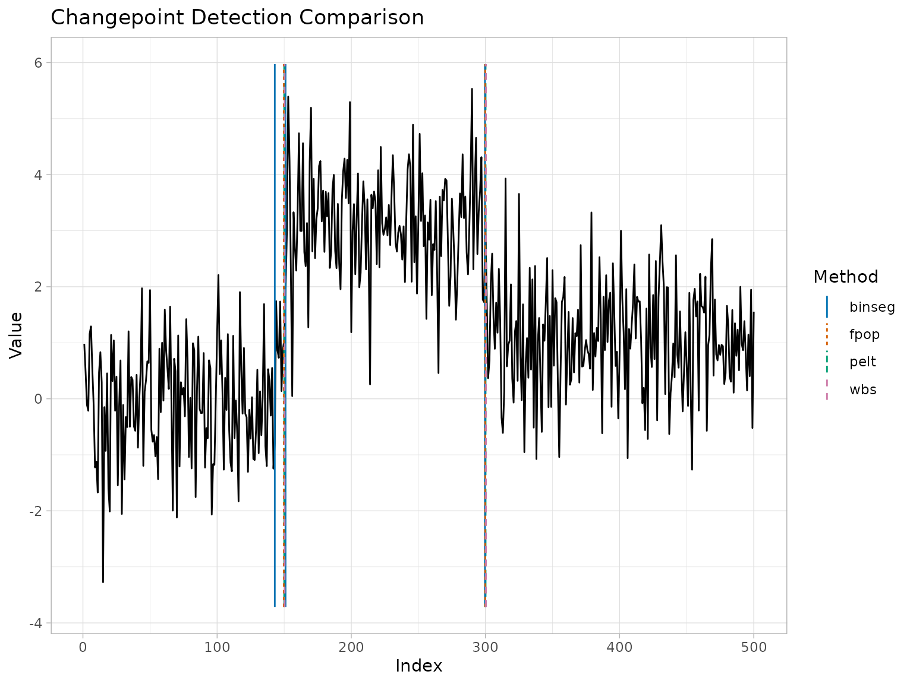
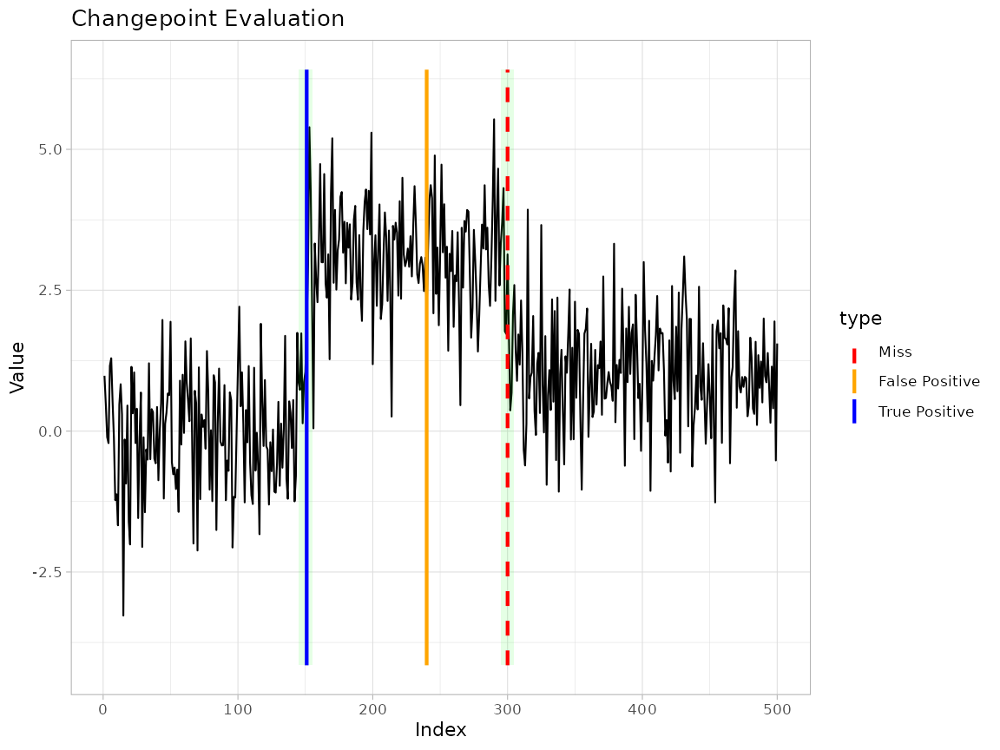
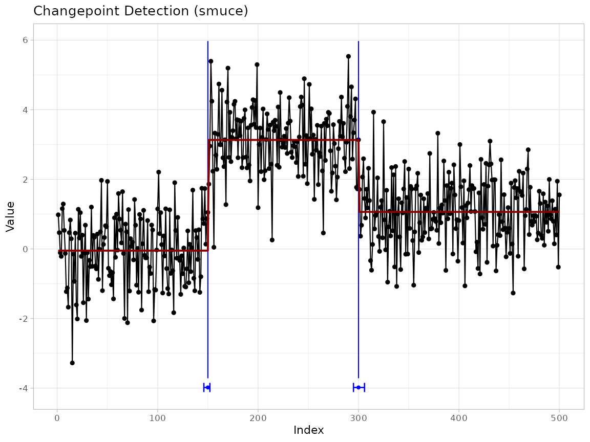
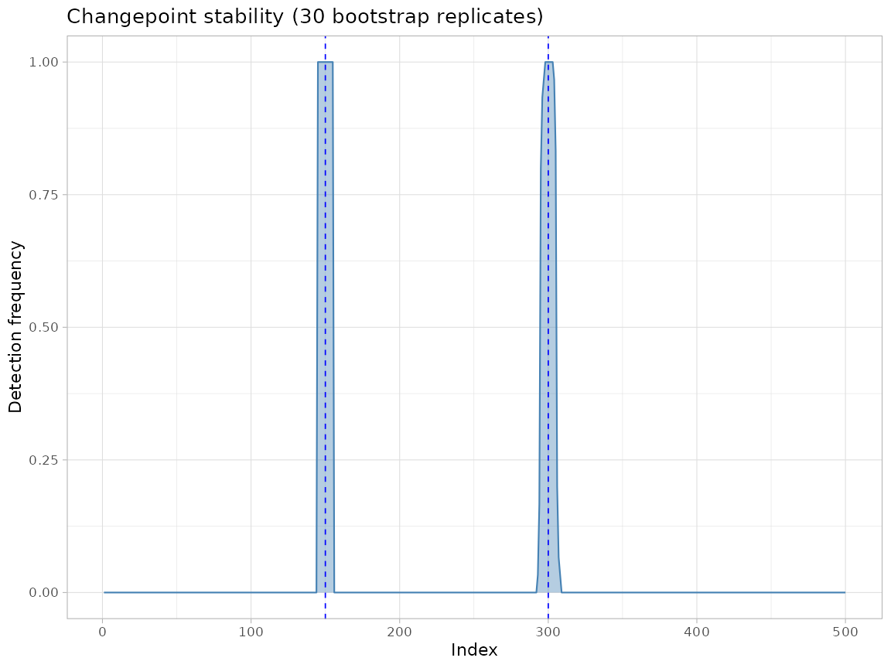
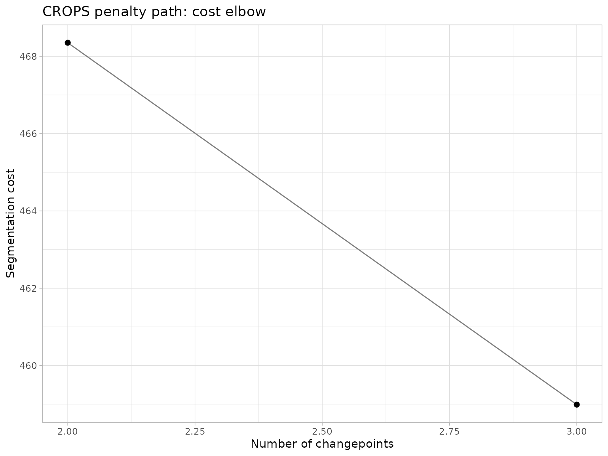
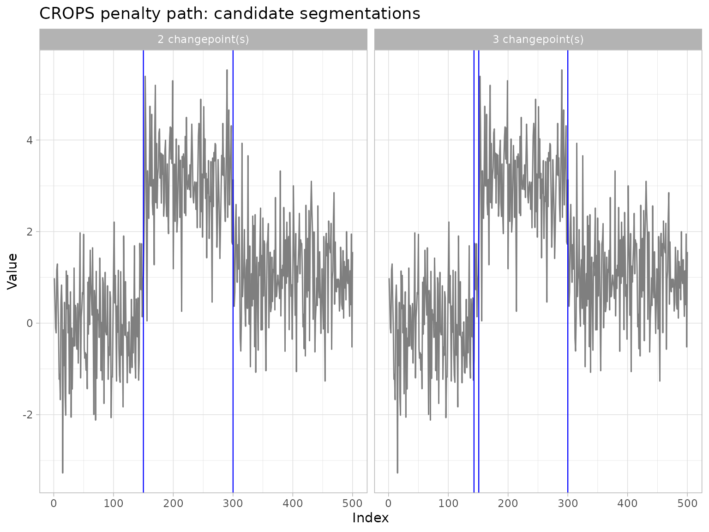
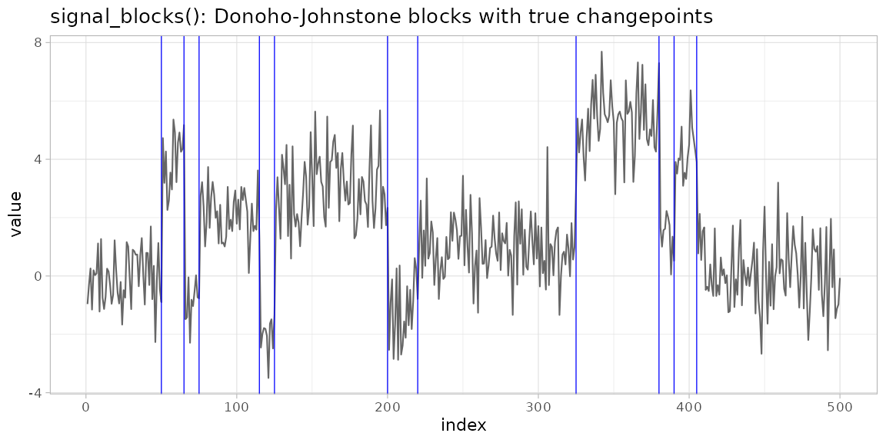

Comparing and Evaluating Changepoint Methods with ggchangepoint
Youzhi
Yu
University of Chicago
Source: vignettes/comparison.Rmd
comparison.RmdAbstract
No single changepoint detection method dominates across signal
shapes, noise regimes, and computational budgets: large-scale
evaluations find that the ranking of algorithms is highly
dataset-dependent and that default configurations are often far from
optimal (van den Burg and
Williams 2020; Truong et al. 2020). Sound practice
therefore requires running several detectors, comparing their outputs,
and — when ground truth is available — scoring them with well-defined
accuracy metrics. This article presents the comparison and evaluation
toolkit of ggchangepoint: visual comparison across
methods (ggcpt_compare()), a common tidy representation of
competing segmentations (ggcpt_compare_table()), a metrics
module implementing precision/recall/F1 under one-to-one matching, the
covering metric, Hausdorff distance, and the adjusted Rand index
(cpt_metrics()), multi-annotator scoring in the style of
the Turing Change Point Dataset benchmark
(cpt_metrics_annotated()), and visual evaluation against
ground truth (ggcpt_eval()). We further discuss three
complementary tools for quantifying the uncertainty of a
segmentation — engine-native confidence intervals, bootstrap stability
profiles (cpt_stability()), and the CROPS penalty path
(cpt_crops()) — and close with a small simulation-based
benchmarking workflow built from the package’s ground-truth
generators.
Introduction
The changepoint literature offers a wide menu of detectors — penalised optimal partitioning, binary segmentation and its wild and narrowest-over-threshold refinements, moving-sum statistics, nonparametric divergence measures, Bayesian posteriors — each with its own inductive bias (Aminikhanghahi and Cook 2017; Truong et al. 2020). Benchmarks that score many algorithms on many series find no uniform winner: performance depends on the kind of change (mean, variance, distribution), the noise (Gaussian, heavy tailed, autocorrelated), the number and spacing of changes, and the tuning of penalties and thresholds (van den Burg and Williams 2020). Two practical consequences follow. First, an analyst should compare several methods on the data at hand rather than trust one default. Second, when ground truth (or expert annotation) exists, comparison should be quantitative, using metrics with agreed conventions.
ggchangepoint supports both activities behind one
interface. Every detector returns the same tidy ggcpt
object, so competing methods are directly comparable; the comparison
module renders them side by side, and the evaluation module scores them.
This article is the package’s methods-paper treatment of that workflow.
The companion vignette
vignette("introduction", package = "ggchangepoint")
documents the full detection surface; here we take detectors as given
and focus on comparison, evaluation, and uncertainty.
Problem setup
Let be an ordered sequence. A segmentation with changepoints is an ordered set with , partitioning the index set into segments , . Most offline methods minimise a penalised cost where is a segment cost and guards against over-segmentation (Yao 1988; Killick et al. 2012).
Throughout the package a changepoint is reported in the “left” convention: is the last index of the left segment, the convention of the changepoint package (Killick et al. 2012). Engines that natively report the first index of the right segment (e.g. the ecp family, Matteson and James (2014)) are normalised on the way in, so comparisons across methods are always like for like.
Comparing segmentations is harder than comparing point estimates for three reasons. First, the number of detected changes varies across methods, so a metric must handle unequal-length sets. Second, a detection a few indices away from a true change is usually acceptable, so metrics need a tolerance margin — and a matching rule that prevents one true change from being “claimed” by several detections. Third, changepoint sets induce partitions, and two very different-looking point sets can induce similar partitions; good practice therefore reports both point-based metrics (precision/recall, Hausdorff) and partition-based metrics (covering, Rand) (van den Burg and Williams 2020).
Visual comparison
We simulate a series with three mean levels (two changepoints) and
run several detectors through the unified dispatcher.
ggcpt_compare() accepts the raw series and a vector of
method names, runs cpt_detect() for each, and renders the
results. The default layout = "facet" draws one panel per
method:
set.seed(2024)
x <- c(rnorm(150, 0), rnorm(150, 3), rnorm(200, 1))
ggcpt_compare(x, methods = cmp_methods)
A method that finds no changepoints keeps its (empty-ruled) panel rather than silently disappearing — a method that ran and found nothing is a result, not a missing value:
set.seed(7)
x_null <- rnorm(300)
ggcpt_compare(x_null, methods = c("pelt", "binseg"))
The layout = "overlay" variant superimposes all methods
in a single panel with colour-coded rules, which makes small
disagreements in estimated locations easier to see:
ggcpt_compare(x, methods = cmp_methods, layout = "overlay")
For a numeric rather than visual comparison,
ggcpt_compare_table() returns one tidy tibble with a row
per (method, changepoint) pair:
ggcpt_compare_table(x, methods = cmp_methods)
#> # A tibble: 9 × 3
#> method cp cp_value
#> <chr> <int> <dbl>
#> 1 pelt 150 1.05
#> 2 pelt 300 3.14
#> 3 binseg 143 -0.796
#> 4 binseg 151 1.86
#> 5 binseg 300 3.14
#> 6 fpop 150 1.05
#> 7 fpop 300 3.14
#> 8 wbs 150 1.05
#> 9 wbs 300 3.14Because every row carries the same columns, this table pipes directly into dplyr/ggplot2 summaries — counting detections per method, plotting location agreement, and so on (Wickham 2016).
Accuracy metrics
When the true changepoints
are known, cpt_metrics(pred, truth, n, margin) scores a
predicted set
with the following quantities.
Precision, recall, and F1 under one-to-one matching. A prediction matches a truth if . Matching is one-to-one: predictions are scanned in increasing order and each takes the earliest unmatched truth within the margin, so each truth is claimed by at most one prediction (for points on a line this greedy rule attains a maximum matching). With matched pairs, which guarantees all three lie in — three predictions crowded around one true change score one true positive, not three.
The covering metric. Following van den Burg and Williams (2020), let and be the partitions induced by the truth and the prediction, and the Jaccard index of two segments. The covering of by is a weighted average of the best overlap achieved for each true segment.
Hausdorff distance. The worst-case location error
;
it is NA when either set is empty (there is no distance to
a nonexistent point).
Adjusted Rand index. The chance-corrected agreement of the two induced segment labellings; 1 for identical partitions, 0 for chance-level agreement.
Annotation error and matched location errors. The absolute difference in counts , and the MAE/RMSE of the matched location pairs.
# perfect detection
cpt_metrics(pred = c(150, 300), truth = c(150, 300), n = 500)
#> # A tibble: 1 × 12
#> n n_pred n_truth precision recall f1 covering hausdorff rand_index
#> <int> <int> <int> <dbl> <dbl> <dbl> <dbl> <dbl> <dbl>
#> 1 500 2 2 1 1 1 1 0 1
#> # ℹ 3 more variables: annotation_error <int>, mae_matched <dbl>,
#> # rmse_matched <dbl>
# near misses within the margin still match one-to-one
cpt_metrics(pred = c(148, 305), truth = c(150, 300), n = 500, margin = 5)
#> # A tibble: 1 × 12
#> n n_pred n_truth precision recall f1 covering hausdorff rand_index
#> <int> <int> <int> <dbl> <dbl> <dbl> <dbl> <dbl> <dbl>
#> 1 500 2 2 1 1 1 0.973 5 0.958
#> # ℹ 3 more variables: annotation_error <int>, mae_matched <dbl>,
#> # rmse_matched <dbl>
# three predictions around one truth: one TP, precision 1/3
cpt_metrics(pred = c(148, 150, 152), truth = c(150), n = 500, margin = 5)
#> # A tibble: 1 × 12
#> n n_pred n_truth precision recall f1 covering hausdorff rand_index
#> <int> <int> <int> <dbl> <dbl> <dbl> <dbl> <dbl> <dbl>
#> 1 500 3 1 0.333 1 0.5 0.992 2 0.984
#> # ℹ 3 more variables: annotation_error <int>, mae_matched <dbl>,
#> # rmse_matched <dbl>Three edge-case conventions deserve emphasis, because getting them wrong silently corrupts benchmark averages:
- Both sets empty. Predicting “no changepoints” for a series with no changepoints is exactly right, so precision, recall, F1, covering, and the Rand index all equal 1.
-
Empty prediction, non-empty truth. An empty
changepoint set induces the trivial one-segment partition, which is a
perfectly well-defined partition: covering scores it by segment overlap
(not an automatic 0), while the adjusted Rand index is 0 (chance-level
agreement) and precision/recall are
- Out-of-range indices. Changepoint locations must lie in under the left convention; anything outside is dropped with a warning rather than crashing the partition construction.
# a correct "no change" answer is rewarded
cpt_metrics(pred = integer(0), truth = integer(0), n = 300)
#> # A tibble: 1 × 12
#> n n_pred n_truth precision recall f1 covering hausdorff rand_index
#> <int> <int> <int> <dbl> <dbl> <dbl> <dbl> <dbl> <dbl>
#> 1 300 0 0 1 1 1 1 NA 1
#> # ℹ 3 more variables: annotation_error <int>, mae_matched <dbl>,
#> # rmse_matched <dbl>
# empty prediction against one true change: trivial-partition covering
cpt_metrics(pred = integer(0), truth = c(150), n = 300)
#> # A tibble: 1 × 12
#> n n_pred n_truth precision recall f1 covering hausdorff rand_index
#> <int> <int> <int> <dbl> <dbl> <dbl> <dbl> <dbl> <dbl>
#> 1 300 0 1 0 0 0 0.5 NA 0
#> # ℹ 3 more variables: annotation_error <int>, mae_matched <dbl>,
#> # rmse_matched <dbl>Multi-annotator evaluation
For real data, “ground truth” is often a set of human annotations
that disagree with one another. The Turing Change Point Dataset
benchmark (van den Burg and
Williams 2020) therefore scores a prediction against
each annotator and averages.
cpt_metrics_annotated() implements this convention: it
takes a list of annotation vectors and returns the averaged precision,
recall, F1, and covering.
annotations <- list(
ann1 = c(150, 300),
ann2 = c(152, 301),
ann3 = c(149) # a third annotator missed the second change
)
cpt_metrics_annotated(pred = c(150, 300), annotations, n = 500, margin = 5)
#> # A tibble: 1 × 7
#> n n_annotators n_pred precision recall f1 covering
#> <dbl> <int> <int> <dbl> <dbl> <dbl> <dbl>
#> 1 500 3 2 0.833 1 0.889 0.895Visual evaluation
ggcpt_eval() overlays predictions and ground truth on
the series, shades the tolerance window around each true change, and
colours each prediction as a true positive or false positive, with
missed truths drawn as dashed “Miss” rules. It uses the same
one-to-one matching as cpt_metrics(), so the picture
and the numbers always agree:
truth <- c(150, 300)
pred <- c(151, 240) # one hit, one false alarm, one miss
ggcpt_eval(pred, truth, data_vec = x, margin = 5)
cpt_metrics(pred, truth, n = length(x), margin = 5)
#> # A tibble: 1 × 12
#> n n_pred n_truth precision recall f1 covering hausdorff rand_index
#> <int> <int> <int> <dbl> <dbl> <dbl> <dbl> <dbl> <dbl>
#> 1 500 2 2 0.5 0.5 0.5 0.784 60 0.696
#> # ℹ 3 more variables: annotation_error <int>, mae_matched <dbl>,
#> # rmse_matched <dbl>Uncertainty beyond point sets
A segmentation is a point estimate. Three complementary tools quantify how much confidence it deserves.
Engine-native confidence intervals
Some engines deliver genuine confidence statements for changepoint
locations. SMUCE (Frick et al.
2014) controls, at level
,
the probability of overestimating the number of changepoints, and
returns a confidence interval for every location; the Bai–Perron dynamic
program (Bai and Perron 2003; Zeileis et al.
2002) returns break-date intervals for regression breaks. Both
populate ci_lower/ci_upper columns on the
ggcpt changepoints tibble, and
autoplot(show_ci = TRUE) draws them as whiskers:
res_smuce <- smuce_wrapper(x)
tidy(res_smuce)
#> # A tibble: 2 × 4
#> cp cp_value ci_lower ci_upper
#> <int> <dbl> <int> <int>
#> 1 150 1.05 146 152
#> 2 300 3.14 295 306
autoplot(res_smuce, show_ci = TRUE, show_fit = TRUE)
res_bp <- strucchange_wrapper(x)
tidy(res_bp)
#> # A tibble: 2 × 4
#> cp cp_value ci_lower ci_upper
#> <int> <dbl> <int> <int>
#> 1 150 1.05 149 152
#> 2 300 3.14 297 303Bootstrap stability
Most engines ship no intervals at all. cpt_stability()
provides a cheap, model-agnostic substitute: it fits the detector once,
resamples residuals within the fitted segments (preserving the
estimated regime structure), re-runs the detector on each replicate, and
reports the proportion of replicates that re-detect a change within
margin of each index. Locations that survive resampling are
trustworthy; locations that appear in only a fraction of replicates are
fragile.
st <- cpt_stability(x, method = "pelt", B = 30, seed = 1)
st
#> ggcpt_stability (30 bootstrap replicates, method: pelt)
#>
#> Original changepoints and their re-detection frequency:
#> # A tibble: 2 × 2
#> cp stability
#> <int> <dbl>
#> 1 150 1
#> 2 300 1
autoplot(st)
Penalty-path sensitivity: CROPS
Penalised methods commit to one penalty
,
and the segmentation can change qualitatively as
moves. CROPS (Haynes et al. 2017) computes
every optimal segmentation as the penalty ranges over an
interval, at roughly one PELT run per distinct solution.
cpt_crops() returns the full path; the elbow plot shows
where adding changepoints stops paying for itself, and the segmentation
facets show the actual candidate models being chosen among — penalty
selection as a diagnostic rather than a guess:
path <- cpt_crops(x)
path
#> ggcpt_path (CROPS penalty path)
#> Change in: mean
#> Penalty range: [6.215, 62.15]
#> Series length: 500
#> Distinct segmentations: 2
#>
#> # A tibble: 2 × 3
#> penalty n_cpts cost
#> <dbl> <int> <dbl>
#> 1 9.36 2 468.
#> 2 6.21 3 459.
autoplot(path) # cost elbow
autoplot(path, type = "segmentations") # the candidate segmentations
A benchmarking workflow
The package’s simulation module closes the loop: generators with
known truth feed the metrics module, so methods can be scored
over replications. cpt_simulate() draws series with
specified changepoints, and the canonical test signals ship as
ready-made generators — including signal_blocks(), the
Donoho–Johnstone blocks signal (Donoho and
Johnstone 1994), plus signal_teeth() and
signal_stairs().
blocks <- signal_blocks(n = 500, seed = 3)
ggplot(blocks, aes(index, value)) +
geom_line(colour = "grey40") +
geom_vline(xintercept = attr(blocks, "true_changepoints"),
colour = "blue", linewidth = 0.3) +
labs(title = "signal_blocks(): Donoho-Johnstone blocks with true changepoints")
A minimal benchmark: three methods, ten replications of a two-change
series, scored by precision, recall, F1, and covering. (For clarity we
keep everything sequential and small; cpt_batch() runs one
method over many series and honours future::plan() for
parallel execution in larger studies.)
methods <- cmp_methods[1:3]
n_rep <- 10
results <- do.call(rbind, lapply(seq_len(n_rep), function(r) {
dat <- cpt_simulate(400, changepoints = c(130, 260), change_in = "mean",
params = c(0, 2.5, 0.5), sd = 1, seed = 100 + r)
truth <- attr(dat, "true_changepoints")
do.call(rbind, lapply(methods, function(m) {
fit <- cpt_detect(dat$value, method = m)
score <- cpt_metrics(fit$changepoints$cp, truth, n = 400, margin = 5)
cbind(tibble::tibble(rep = r, method = m),
score[, c("precision", "recall", "f1", "covering")])
}))
}))
# average over replications
res_summary <- aggregate(cbind(precision, recall, f1, covering) ~ method,
data = results, FUN = mean)
knitr::kable(res_summary, digits = 3,
caption = "Mean accuracy over 10 replications (margin = 5).")| method | precision | recall | f1 | covering |
|---|---|---|---|---|
| binseg | 0.95 | 0.95 | 0.95 | 0.993 |
| fpop | 0.95 | 0.95 | 0.95 | 0.993 |
| pelt | 0.95 | 0.95 | 0.95 | 0.993 |
The same skeleton scales to the studies of van den Burg and Williams
(2020): more generators (heavy-tailed and autocorrelated noise
via cpt_simulate(noise = "t") and
noise = "ar1"), more methods (everything in
cpt_methods()), more replications, and parallel execution
via future::plan(multisession).
Discussion
Comparison and evaluation are not afterthoughts in changepoint
analysis; they are how an analyst earns confidence in a segmentation.
The design of ggchangepoint’s toolkit follows three
principles. First, a common representation makes comparison
trivial: because every engine returns the same ggcpt
contract in the same location convention, ggcpt_compare()
and the metrics module work for all thirty-plus methods without special
cases. Second, metrics must agree with their pictures:
ggcpt_eval() and cpt_metrics() share one
matching routine, so a plotted true positive is a counted true positive.
Third, uncertainty deserves first-class treatment:
engine-native intervals, bootstrap stability, and penalty paths give
three independent views of how much a reported changepoint should be
trusted, and all three render directly with ggplot2
(Wickham 2016).
For the detection surface itself — the dispatcher, the engine wave,
the Bayesian displays, and the multivariate tools — see
vignette("introduction", package = "ggchangepoint") and the
feature tour in
vignette("ggchangepoint", package = "ggchangepoint").